Bienvenue Sur Medical Education
Traumatismes de cheville à radios normales
Spécialité : traumatologie /
Points importants
-
Situation fréquente en urgence
-
Règles dites « règles d'Ottawa » définies pour essayer de diminuer le nombre de radiographies de la cheville prescrites dans le cadre de l'urgence. Cependant :
-
l'examen clinique n'a pas une fiabilité à 100%
-
la douleur est un élément extrêmement subjectif qu'il est difficile de quantifier objectivement
-
le prix d'une radiographie de la cheville est particulièrement modeste par rapport au coût induit par une erreur diagnostique
-
le délai d'attente dans les services d'urgence peut être fortement diminué si la radiographie (lorsqu'elle est jugée non urgente), est prescrite pour être réalisée à l'extérieur de l'hôpital le soir ou le lendemain du traumatisme
-
la valeur médico-légale d'une radiographie initiale est essentielle pour certaines pathologies (lésion ostéochondrale du dôme astragalien [fracture ou ostéochondrite ?]), syndrome du carrefour postérieur (fracture de la queue de l'astragale ou os trigone ?)
- l'examen clinique n'a pas une fiabilité à 100%
- la douleur est un élément extrêmement subjectif qu'il est difficile de quantifier objectivement
- le prix d'une radiographie de la cheville est particulièrement modeste par rapport au coût induit par une erreur diagnostique
- le délai d'attente dans les services d'urgence peut être fortement diminué si la radiographie (lorsqu'elle est jugée non urgente), est prescrite pour être réalisée à l'extérieur de l'hôpital le soir ou le lendemain du traumatisme
- la valeur médico-légale d'une radiographie initiale est essentielle pour certaines pathologies (lésion ostéochondrale du dôme astragalien [fracture ou ostéochondrite ?]), syndrome du carrefour postérieur (fracture de la queue de l'astragale ou os trigone ?)
Entorses de la cheville
- Les entorses externes sont extrêmement fréquentes et représentent 10 à 15% des traumatismes des membres
- La plupart sont des entorses bénignes (80 à 85%) et beaucoup correspondent à des entorses récidivantes
- Il est classique de parler d'entorse bénigne, moyenne ou grave. Cependant cette classification n'est basée sur aucun critère objectif si bien que nous ne l'utilisons pas en pratique quotidienne
- La gravité d'une entorse, quelle que soit sa localisation, se définit par l'importance de la laxité qu'elle engendre, il est donc impératif de quantifier cette laxité pour adopter une attitude thérapeutique cohérente et reproductible
Luxation des tendons péroniers (fibulaires)
- Lésion relativement rare, passant donc volontiers inaperçue en urgence
Fractures « non visibles »
- Les fractures sont d'autant plus visibles que l'interprétation des radiographies a été orientée par un bon examen clinique
- On ne trouve que ce que l'on cherche
Présentation clinique / CIMU
_913
- - -
Examen clinique de cheville et de pied
Entorses de la tibio-péronière inférieure
Entorses antérieures
Entorses du ligament latéral interne
Entorses médio-tarsiennes (articulation de Chopart)
Calcanéum (calcaneus)
Astragale (talus)
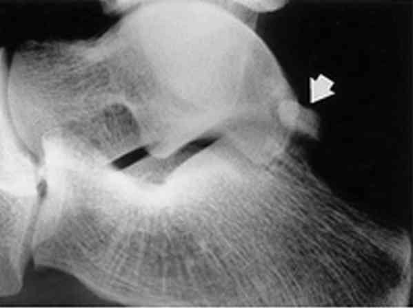
_334
Photo
Fracture de la queue de l'astragale
Scaphoïde tarsien (os naviculaire)
Les fractures qui passent volontiers inaperçues sont les fractures de fatigue et les fractures du tubercule médial du scaphoïde correspondant le plus souvent à un traumatisme d'un tubercule accessoire hypertrophique.
Cuboïde, cunéiformes, styloïde du 5e métatarsien, bases des métatarsiens
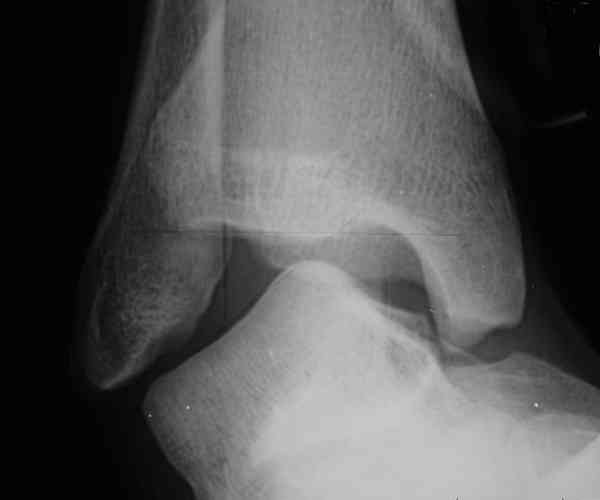
_327
Photo
Radiographie de cheville en varus équin
Entorses de la tibio-péronière inférieure
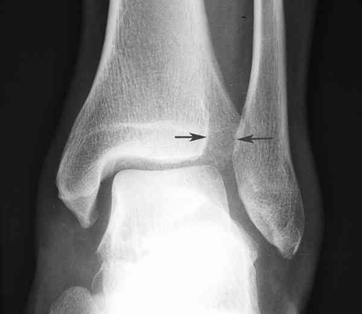
_329
Photo
Entorse de l'articulation tibio-péronière
Entorses antérieures
Entorses médio-tarsiennes (articulation de Chopart)
Calcanéum (calcaneus)
Fracture non déplacée du corps ou du col de l'astragale
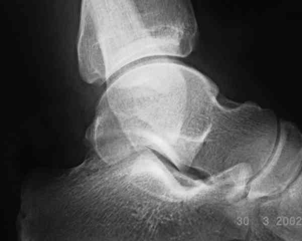
_330
Photo
Fracture du corps de l'astragale non visible
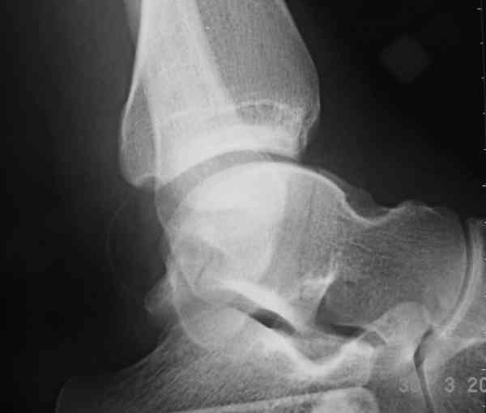
_331
Photo
Fracture du corps de l'astragale précédente visible sur cette incidence
Lésion ostéochondrale du dôme astragalien
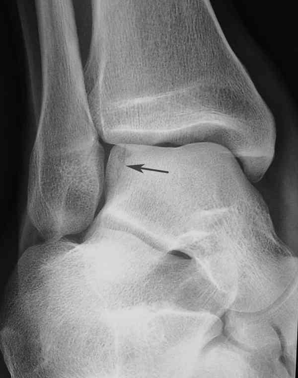
_332
Photo
Fracture de l'angle supéro-externe de l'astragale
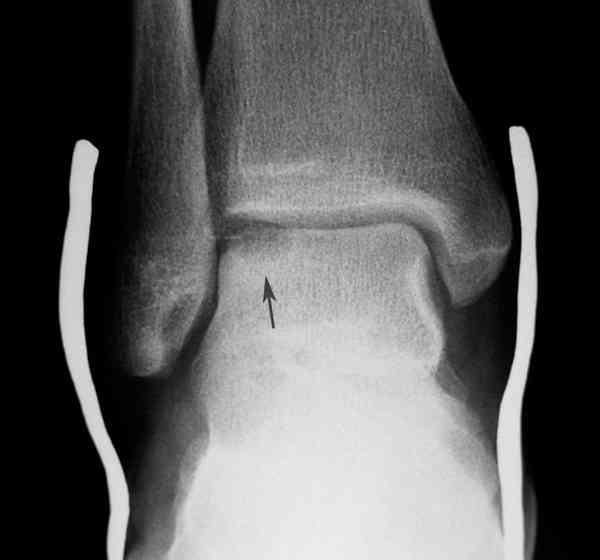
_333
Photo
Lésion ostéochondrale du dôme astragalien vue tardivement
Fracture de la queue de l'astragale dite fracture de Shepherd
_334
Photo
Fracture de la queue de l'astragale
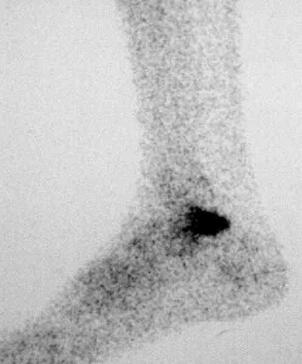
_335
Photo
Scintigraphie osseuse de cheville
Fracture du tubercule externe de l'astragale
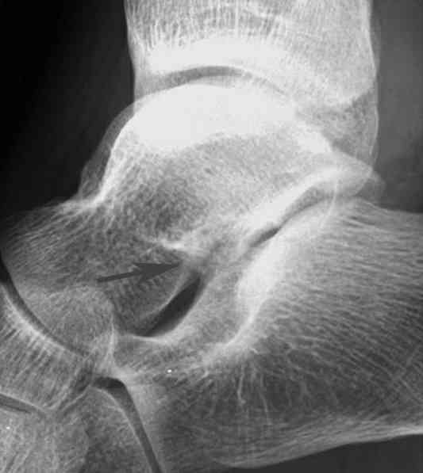
_336
Photo
Fracture du tubercule externe de l'astragale à peine visible
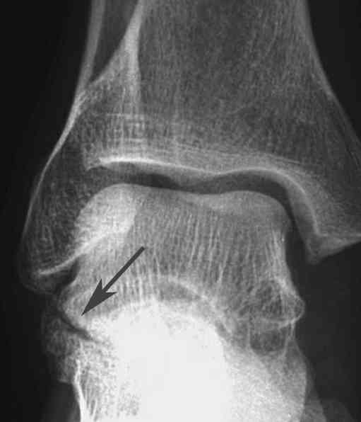
_337
Photo
Fracture du tubercule externe de l'astragale visible
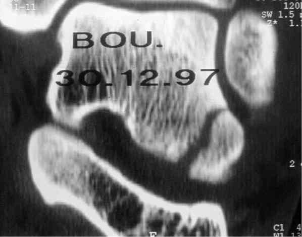
_338
Photo
Scanner d'une fracture du tubercule externe de l'astragale
Fracture de fatigue
Lésion du tubercule accessoire du scaphoïde
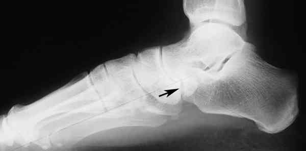
_339
Photo
Fracture du tubercule interne du scaphoïde tarsien
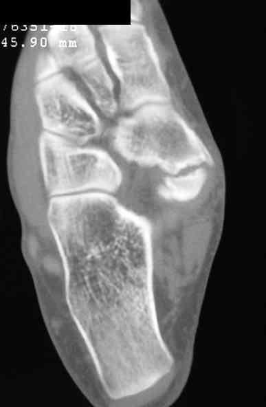
_340
Photo
Scanner de la « fracture » du tubercule interne du scaphoïde
Cuboïde, cunéiformes, styloïde du 5e métatarsien, bases des métatarsiens
Entorses bénignes
_951
- - -
Stapping de cheville pour entorse
Entorses graves
Entorses récidivantes
Entorses de la tibio-péronière inférieure
Entorses du ligament latéral interne
Entorses médio-tarsiennes (articulation de Chopart)
Calcanéum (calcaneus)
Fracture du tubercule externe de l'astragale
Fracture de fatigue
Lésion du tubercule accessoire du scaphoïde
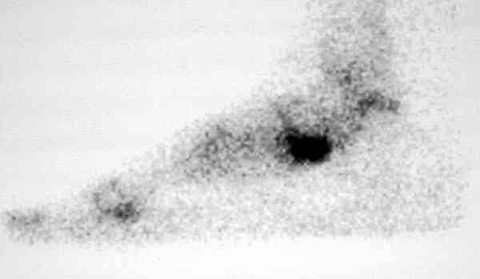
_341
Photo
Aspect scintigraphique de la « fracture » du tubercule interne du scaphoïde tarsien
Auteur(s) : Jean-Jacques BANIHACHEMI, Dominique SARAGAGLIA
ENTORSES EXTERNES DE LA CHEVILLE
AUTRES ENTORSES DE LA CHEVILLE
LUXATION DES TENDONS PERONIERS (FIBULAIRES)
FRACTURES « NON VISIBLES »
Signes paracliniques
ENTORSES EXTERNES DE LA CHEVILLE
 _328
Photo
Radiographie de cheville : incidence de profil
_328
Photo
Radiographie de cheville : incidence de profil
AUTRES ENTORSES DE LA CHEVILLE
LUXATION DES TENDONS PERONIERS (FIBULAIRES)
FRACTURES « NON VISIBLES »
 _342
Photo
Fracture non déplacée de la styloïde du 5e métatarsien
_342
Photo
Fracture non déplacée de la styloïde du 5e métatarsien
Traitement
ENTORSES EXTERNES DE LA CHEVILLE
AUTRES ENTORSES DE LA CHEVILLE
LUXATION DES TENDONS PERONIERS (FIBULAIRES)
FRACTURES « NON VISIBLES »
AU TOTAL
Bibliographie